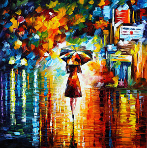
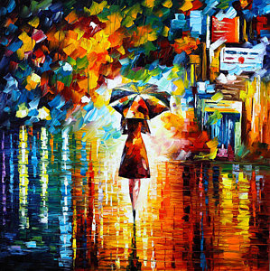
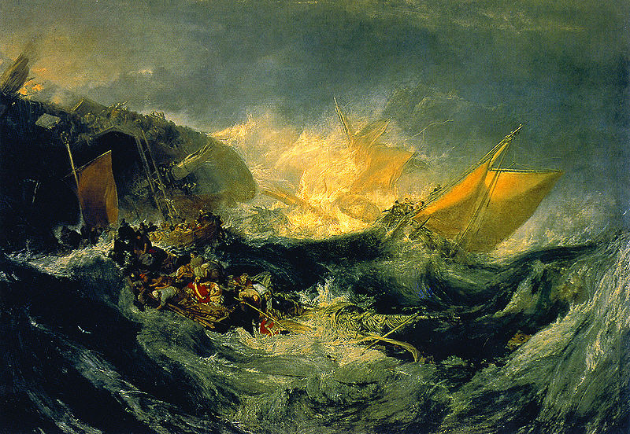
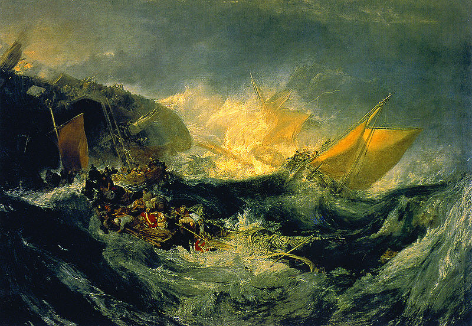

Oh hey! You've found Deep Sketch pad. Draw on the canvas, change the colors using the color wheel, or even upload an
image to get started with by clicking browse.
Once you're happy with it, select a painting whose style you want to emulate, click it, then click the stylize button.
At any time you can save your work by clicking the "Click this text to save your work!"
Pro tip: try running your image through styles multiple times. The more stuff on the canvas the weirder it gets.
 

 >
>

 
